scRNA-seq揭示脓毒症预后水平预测的关键靶点！
原文：https://mp.weixin.qq.com/s?__biz=MzAwMzIzOTk5OQ==&mid=2247522281&idx=1&sn=f95eb12fdc340b8da1123ec6253e6fac&chksm=9b3ceeb9ac4b67afa587e5fa3a2a8960e9bb28a1ad6dc48e49120a76154417a4c8be95af90b0#rd 合集：单细胞教程全收录 / 文献速递
写在前面
这又是一篇在Acknowledgement对我们进行致谢 的文章：
脓毒症（ Sepsis）是宿主对感染的反应失调而致的危及生命的器官功能障碍。中国ICU脓毒症患者流行病学调查显示，ICU脓毒症发病率为20.6%，90天病死率为35.5%。目前临床上脓毒症的治疗以支持性治疗为主，包括控制感染源、使用抗生素和对器官功能障碍提供支持，然而，这些治疗通常不能逆转免疫系统的破坏和治疗后免疫反应的异常，因此亟需有效的预防、诊断和治疗脓毒症的方法。 这篇文章中，作者通过scRNA-seq确定了血小板在脓毒症患者中的重要性，并通过结合血小板关键基因和大量RNA-seq数据建立了一种新的脓毒症患者预后模型。该模型与患者生存率和免疫状态密切相关，可用于脓毒症的预后管理。 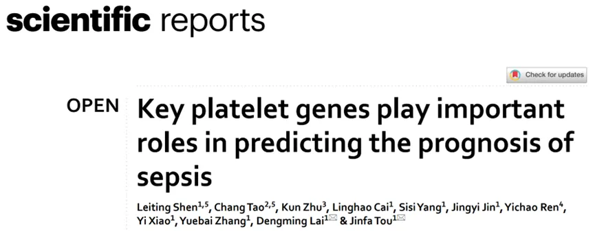 :
:
*
Since Biomamba and his wechat public account team produce bioinformatics tutorials elaborately and share code with annotation, we thank Biomamba for their guidance in bioinformatics and data analysis for the current study.
如果需要数据分析指导 、生信热点全文复现 、自测数据个性化分析 辅导，欢迎联系客服微信[Biomamba_yunying]
二、分析流程一览
- 数据来源：****
| 2. 数据集 /队列 | 数据库 | 数据类型 | 样本具体信息 |
|---|---|---|---|
| GSE175453 | GEO | scRNA-seq | 外周血单核细胞测序数据集，包括5名对照患者和4名败血症患者。 |
| GSE28750 | GEO | RNA-seq | 脓毒症患者中的差异基因 |
| GSE65682 | GEO | RNA-seq**** | 脓毒症患者中的差异基因**** |
工作流程：
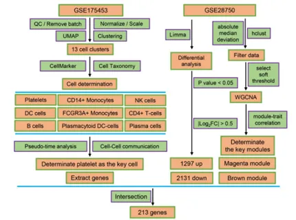
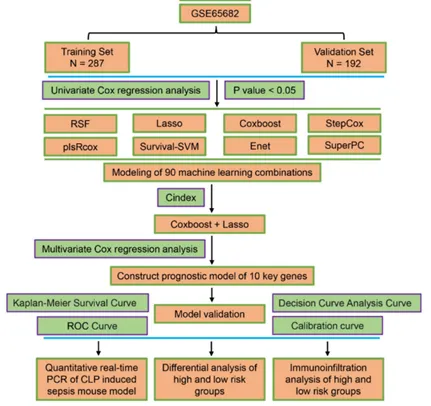
二、主要内容
- **1. **单细胞测序数据中的细胞亚群鉴定。
首先，作者根据RNA的nCount、nFeature和线粒体基因百分比 过滤掉不合格的细胞，同时保留了至少4个细胞中表达的基因，得到36,866个细胞和19,531个基因(Fig.2a)，其中2000个基因发生了显著性变化(Fig.2b)，经**“harmony”包** 分析后发现样本分散均匀，没有明显的批次效应(Fig.2c)。UMAP降维处理 展示了13个不同的细胞簇(Fig.2d,e),经Cell Marker数据库和Cell Taxonomy数据库 识别各个细胞簇的标志基因，鉴定出了CD14+单核细胞, CD4+T细胞和NK细胞等9类细胞(Fig.2f)。Fig.2****
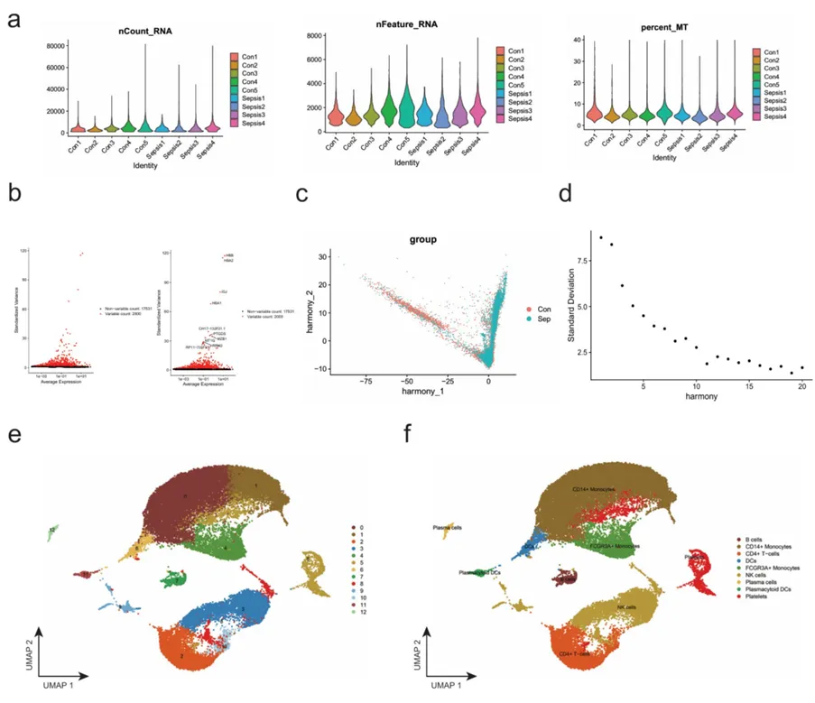
- **2. **单细胞测序数据中细胞通讯分析。
在上述发现的基础上，作者进一步进行细胞间交流分析，经**“CellChat”包** 展示细胞间通讯，结果显示脓毒症中血小板与各种细胞之间的相互作用数量和强度都显著增加（Fig.3a，b），同时配体受体分析 显示血小板与各种细胞之间配体-受体通讯也明显增强（Fig.3c）。经**“monocle”包** 进行拟时分析，发现细胞遵循三条不同的轨迹分化成三个不同的状态（Fig.3d,e）,且大部分免疫细胞集中于状态1，状态2中各种免疫细胞的数量减少，血小板的数量显著增加（Fig.3f）。以上结果表明血小板的变化在脓毒症的发生发展中发挥了重要的作用，并且可能会影响患者的预后。
Fig.3****
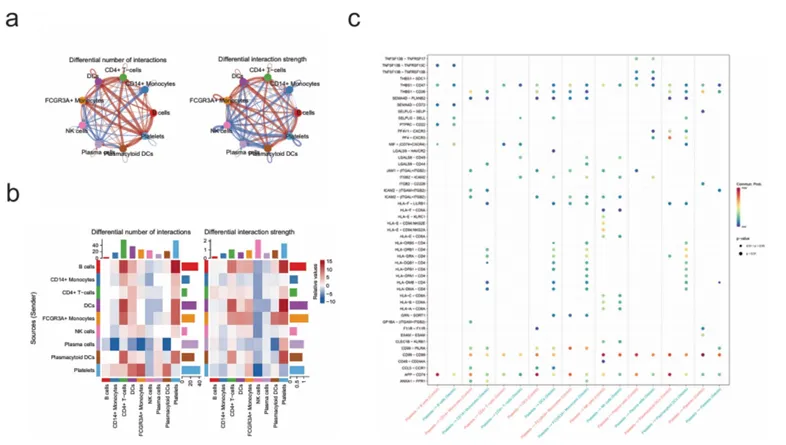
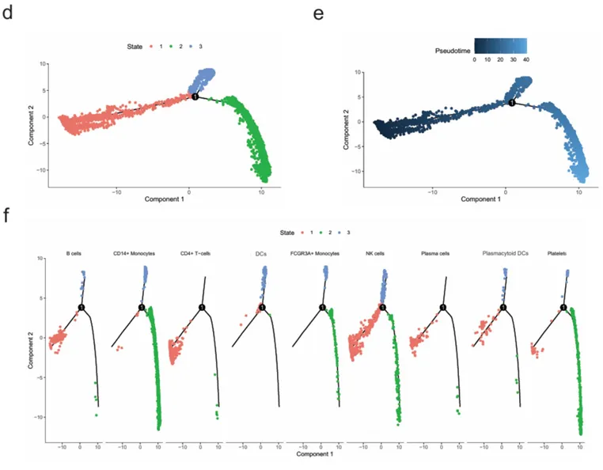
3.Bulk RNA-seq数据中差异基因的富集分析。
差异分析 显示RNA-seq数据中共包括1297个上调表达基因和2131个下调表达基因(Fig.4a），GO富集分析 显示DEGs主要富集于rRNA处理、单核细胞分化、RNA结合和免疫受体活性等通路(Fig.4b）。KEGG富集分析 显示这些DEGs主要与几种传染病和生物过程有关(Fig.4c)，GSEA分析 显示适应性免疫反应、免疫反应调节细胞表面受体信号传导等免疫相关通路下调(Fig.4d,e,f)，通过GSEA进行的KEGG分析 显示，DEGs主要富集于代谢途径和NETs形成过程中(Fig.4g)，以上结果表明相比于对照组，脓毒症患者表现出异常的免疫反应。****
Fig.4
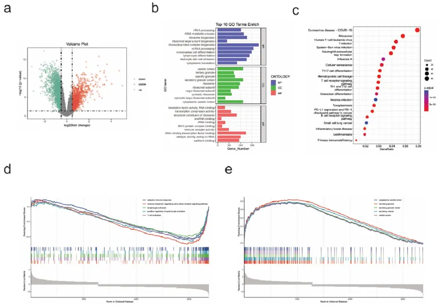
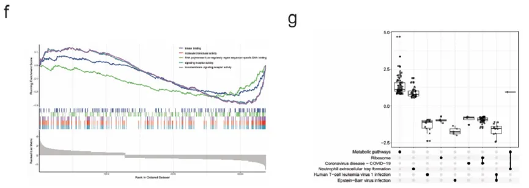
4.RNA-seq数据中WGCNA分析。
在上述发现的基础上，为识别脓毒症中发生发展中的关键基因，作者进行了WGCNA（加权基因共表达网络分析）， 当无尺度拓扑拟合指数达到0.8时，软阈值β幂为8（Fig.5a，b），当把MEDissThres参数调整至0.25时，动态剪切树算法能够分析到18个模块（Fig.5c），其中红色模块基因具有最强的正相关性，而棕色模块基因具有最强的负相关性（Fig.5d-e），因此作者后续选择了这两个模块中的基因进行进一步研究（Fig.5d-e）。
Fig.5****
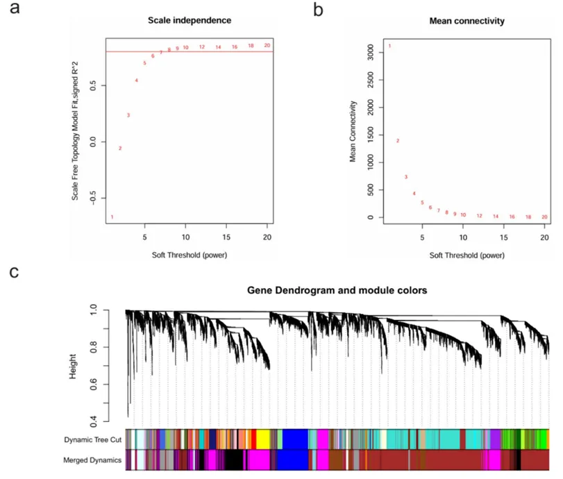
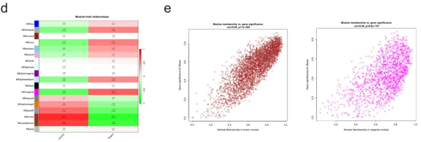
5. 预测模型的构建和验证。
结合RNA-seq分析中获得的DEGs和WGCNA分析中的关键基因，共213个基因（Fig.6b），在此基础上，经单变量Cox回归分析， 作者在90种算法中确定了57个候选基因（Fig.6a）。通过“coxboost+lasso”模型进行后续分析，经过多变量Cox回归分析 ，作者鉴定出十个关键预后基因，分别为PPDPF、RPL11、FOS、SAT1、CTSW、MAP3K7、GIMAP4、CD36、CD93和TRAIL(Fig.6c-d）。
Fig.6****
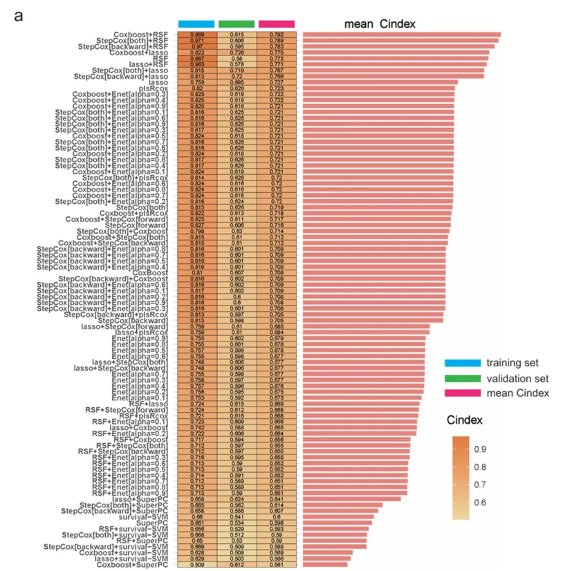
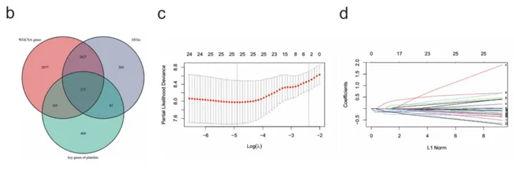
根据患者的风险评分，将患者分为高风险组和低风险组 ，其中高风险组患者的总体生存期（OS）比低风险组患者短（Fig.7a），ROC曲线 表示作者开发的预后模型在1,2和3周的生存预测上具有良好的预后能力（Fig.7b）。校准曲线 也显示实际生存率和预测生存率之间具有高度一致性（Fig.7c）。DCA曲线 显示该风险模型大规模超过了阈值基线（Fig.7d）。验证集上也得到了相同的结果（Fig.7e-f）。通过CLP诱导的脓毒症小鼠模型，作者进行了进一步验证，对于血清的qRT-PCR分析结果显示，CD36、CD93、GIMAP4、PPDPF和MAP3K7这五个基因在Model组中明显增加，表明这些基因可能在脓毒症的发展中发挥了重要的作用（Fig.7g）。Fig.7
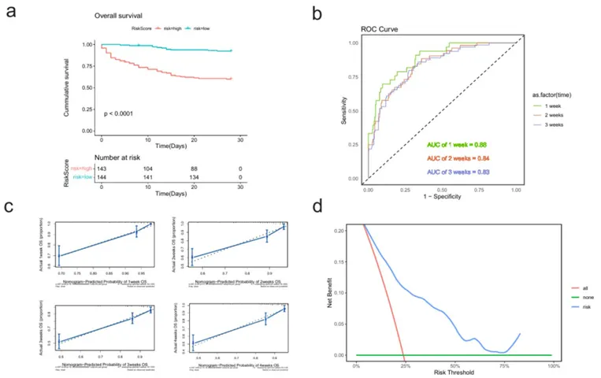
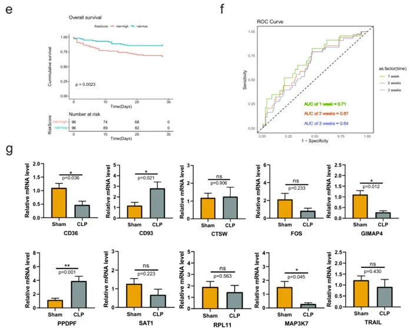
6. 高风险和低风险人群中免疫细胞浸润的差异分析。
经ssGSEA算法 检测两组免疫细胞的浸润差异，结果显示高风险组中多种免疫细胞的得分低于低风险组，表明高风险组存在免疫抑制现象（Fig.8a），其中10个基因与免疫细胞具有显著的相关性（Fig.8b）。经**“limma”包** 分析差异基因，作者得到了91个表达上调的基因和127个表达下调的基因，并通过Metascape数据库 对差异基因进行功能富集和模块分析，发现DEGs主要富集于免疫系统激活和调节通路(Fig.8c-f）。使用MCODE 研究蛋白质相互作用，作者共鉴定出了6个模块和各个模块中的核心基因(Fig.8g）。
Fig.8****
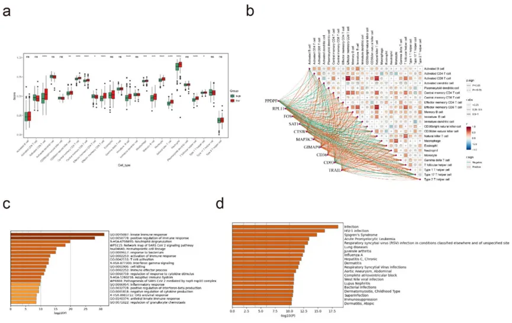
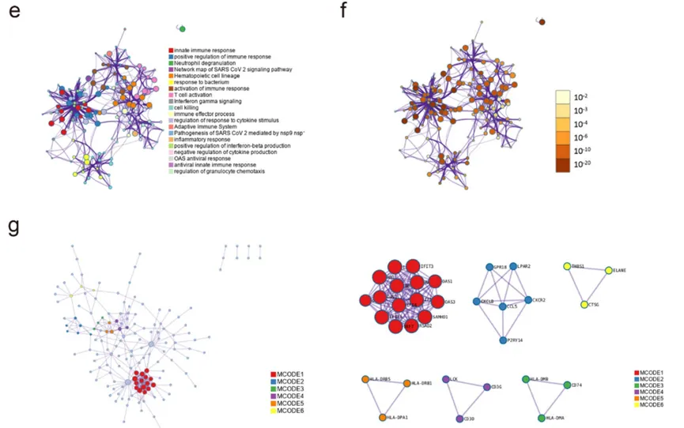
三、最后聊聊
综上所述**，** 作者联合了转录组学和单细胞转录组学分析，筛选出了与脓毒症预后密切相关的关键基因，构建了预后模型并进行了疾病上的验证，除此之外作者还发现血小板与多种细胞之间的相互作用在脓毒症中明显增加，这表明血小板在脓毒症的发展中可能扮演着重要角色。在发现了关键基因后，作者进一步通过脓毒症小鼠模型进行了验证。这篇文章中作者对于数据的挖掘和验证逻辑紧密，为脓毒症的发生发展提供了很好的预测靶点。

如何联系我们

 公众号后台消息回复不便，这里给大家留一下领取资料及免费服务器(足够支持你完成硕博生涯的生信环境)的微信号 ，方便各位随时交流、提建议（别问在么，添加时直接说来意）。此外呼声一直很高的交流群 也建好了，欢迎大家入群讨论：
公众号后台消息回复不便，这里给大家留一下领取资料及免费服务器(足够支持你完成硕博生涯的生信环境)的微信号 ，方便各位随时交流、提建议（别问在么，添加时直接说来意）。此外呼声一直很高的交流群 也建好了，欢迎大家入群讨论：
大家可以阅读完这几篇之后添加给生信入门初学者的小贴士 如何搜索公众号过往发布内容

 您点的每个赞和在看，我都认真当成了喜欢
您点的每个赞和在看，我都认真当成了喜欢